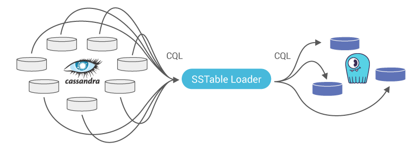
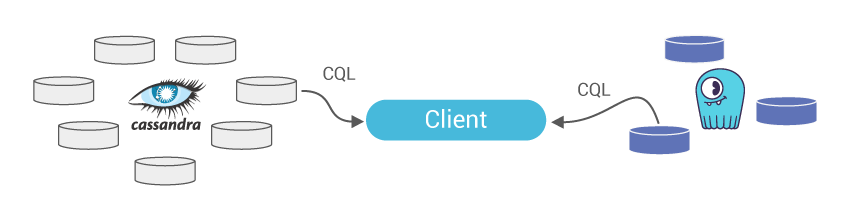
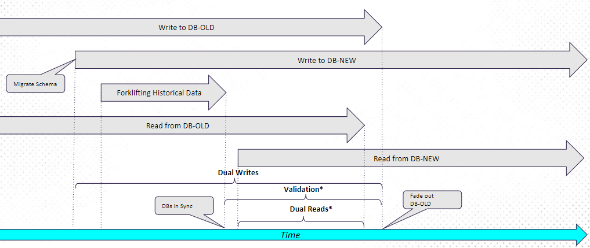

Was this page helpful?
Caution
You're viewing documentation for a previous version. Switch to the latest stable version.
Apache Cassandra to ScyllaDB Migration Process¶
Note
The following instructions apply to migrating from Apache Cassandra and not from DataStax Enterprise. The DataStax Enterprise SSTable format is incompatible with Apache Cassandra or ScyllaDB SSTable Loader and may not migrate properly.
Migrating data from Apache Cassandra to an eventually consistent data store such as ScyllaDB for a high volume, low latency application and verifying its consistency is a multi-step process.
It involves the following high-level steps:
Creating the same schema from Apache Cassandra in ScyllaDB, though there can be some variation
Configuring your application/s to perform dual writes (still reading only from Apache Cassandra)
Taking a snapshot of all to-be-migrated data from Apache Cassandra
Loading the SSTable files to ScyllaDB using the ScyllaDB sstableloader tool + Data validation
Verification period: dual writes and reads, ScyllaDB serves reads. Logging mismatches, until a minimal data mismatch threshold is reached
Apache Cassandra End Of Life: ScyllaDB only for reads and writes
Note
steps 2 and 5 are required for Live migration only (meaning with ongoing traffic and no downtime).
Dual Writes: Application logic is updated to write to both DBs
Forklifting: Migrate historical data from Apache Cassandra SSTables to ScyllaDB
Dual Reads: Ongoing validation of data sync between the two DBs
Live Migration: Migrating from DB-OLD to DB-NEW timeline
Procedure¶
Create manually / Migrate your schema (keyspaces, tables, and user-defined type, if used) on/to your ScyllaDB cluster. When migrating from Apache Cassandra 3.x some schema updates are required (see limitations and known issues section).
Export schema from Apache Cassandra:
cqlsh [IP] "-e DESC SCHEMA" > orig_schema.cqlImport schema to ScyllaDB:
cqlsh [IP] --file 'adjusted_schema.cql'
Note
It is recommended to alter the schema of tables you plan to migrate as follows:
set compaction
min_thresholdto 2, allowing compactions to get rid of duplication faster. Migrating using the sstableloader may create a lot of temporary duplication of the disk.Increase
gc_grace_seconds(default ten days) to a higher value, ensuring you will not lose tombstones during the migration process. The recommended value is 315360000 (10 years).
Make sure to change both parameters back to the original value once the migration is done (using ALTER TABLE).
Note
ScyllaDB Open Source 3.0 and later and ScyllaDB Enterprise 2019.1 and later support Materialized View(MV) and Secondary Index(SI).
When migrating data from Apache Cassandra with MV or SI, you can either:
Create the MV and SI as part of the schema so that each new insert will be indexed.
Upload all the data with sstableloader first, and only then create the secondary indexes and MVs.
In either case, only use the sstableloader to load the base table SSTable. Do not load the index and view data - let ScyllaDB index for you.
If you wish to perform the migration process without any downtime, please configure your application/s to perform dual writes to both data stores, Apache Cassandra and ScyllaDB (see below code snippet for dual writes). Before doing that, and as general guidance, make sure to use the client-generated timestamp (writetime). If you do not, the data on ScyllaDB and Apache Cassandra can be considered different, while it is the same.
Note: your application/s should continue reading and writing from Apache Cassandra until the entire migration process is completed, data integrity validated, and dual writes and reads verification period performed to your satisfaction.
Dual writes and client-generated timestamp Python code snippet
# put both writes (cluster 1 and cluster 2) into a list
writes = []
#insert 1st statement into db1 session, table 1
writes.append(db1.execute_async(insert_statement_prepared[0], values))
#insert 2nd statement into db2 session, table 2
writes.append(db2.execute_async(insert_statement_prepared[1], values))
# loop over futures and output success/fail
results = []
for i in range(0,len(writes)):
try:
row = writes[i].result()
results.append(1)
except Exception:
results.append(0)
#log exception if you like
#logging.exception('Failed write: %s', ('Cluster 1' if (i==0) else 'Cluster 2'))
results.append(values)
log(results)
#did we have failures?
if (results[0]==0):
#do something, like re-write to cluster 1
log('Write to cluster 1 failed')
if (results[1]==0):
#do something, like re-write to cluster 2
log('Write to cluster 2 failed')
for x in range(0,RANDOM_WRITES):
#explicitly set a writetime in microseconds
values = [ random.randrange(0,1000) , str(uuid.uuid4()) , int(time.time()*1000000) ]
execute( values )
See the full code example here
On each Apache Cassandra node, take a snapshot for every keyspace using the nodetool snapshot command. This will flush all SSTables to disk and generate a
snapshotsfolder with an epoch timestamp for each underlying table in that keyspace.Folder path post snapshot:
/var/lib/cassandra/data/keyspace/table-[uuid]/snapshots/[epoch_timestamp]/We strongly advise against running the sstableloader tool directly on the ScyllaDB cluster, as it will consume resources from ScyllaDB. Instead you should run the sstableloader from intermediate node/s. To do that, you need to install the
scylla-tools-corepackage (it includes the sstableloader tool).You need to make sure you have connectivity to both the Apache Cassandra and ScyllaDB clusters. There are two ways to do that; both require having a file system in place (RAID is optional):
Option 1 (recommended): copy the SSTable files from the Apache Cassandra cluster to a local folder on the intermediate node.
Option 2: NFS mount point on the intermediate node to the SSTable files located in the Apache Cassandra nodes.
After installing the relevant pkgs (detailed in the links), edit
/etc/exportsfile on each Apache Cassandra node and add the following in a single line:[Full path to snapshot ‘epoch’ folder] [Scylla_IP](rw,sync,no_root_squash,no_subtree_check)Restart NFS server
sudo systemctl restart nfs-kernel-serverCreate a new folder on one of the ScyllaDB nodes and use it as a mount point to the Apache Cassandra node
Example:
sudo mount [Cassandra_IP]:[Full path to snapshots ‘epoch’ folder] /[ks]/[table]Note: both the local folder or the NFS mount point paths, must end with
/[ks]/[table]format, used by the sstableloader for parsing purposes (seesstableloader helpfor more details).
If you cannot use intermediate node/s (see the previous step), then you have two options:
Option 1: Copy the sstable files to a local folder on one of your ScyllaDB cluster nodes. Preferably on a disk or disk-array which is not part of the ScyllaDB cluster RAID, yet still accessible for the sstableloader tool.
Note: copying it to the ScyllaDB RAID will require sufficient disk space (Apache Cassandra SSTable snapshots size x2 < 50% of ScyllaDB node capacity) to contain both the copied SSTables files and the entire data migrated to ScyllaDB (keyspace RF should also be taken into account).
Option 2: NFS mount point on ScyllaDB nodes to the SSTable files located in the Apache Cassandra nodes (see NFS mount instructions in the previous step). This saves the additional disk space needed for the 1st option.
Note: both the local folder and the NFS mount point paths must end with
/[ks]/[table]format, used by the sstableloader for parsing purposes (seesstableloader helpfor more details).
Use the ScyllaDB sstableloader tool (NOT the Apache Cassandra one which has the same name) to load the SSTables. Running without any parameters will present the list of options and usage. Most important are the SSTables directory and the ScyllaDB node IP.
Examples:
sstableloader -d [ScyllaDB IP] .../[ks]/[table]sstableloader -d [scylla IP] .../[mount point](in/[ks]/[table]format)
We recommend running several sstableloaders in parallel and utilizing all ScyllaDB nodes as targets for SSTable loading. Start with one keyspace and its underlying SSTable files from all Apache Cassandra nodes. After completion, continue to the next keyspace and so on.
Note: limit the sstableloader speed by using the throttling
-tparameter, considering your physical HW, live traffic load, and network utilization (see sstableloader help for more details).Once you completed loading the SSTable files from all keyspaces, you can use
cqlshor any other tool to validate the data migrated successfully. We strongly recommend configuring your application to perform both writes and reads to/from both data stores. Apache Cassandra (as is, up to this point) and ScyllaDB (now as primary) for a verification period. Keep track of the number of requests for which the data in both these data stores are mismatched.Apache Cassandra end of life: once you are confident in your ScyllaDB cluster, you can flip the flag in your application/s, stop writes and reads against the Cassandra cluster, and make ScyllaDB your sole target/source.
Failure Handling¶
What should I do if sstableloader fails?
Each loading job is per keyspace/table_name, that means in any case of failure, you need to repeat the loading job. As you are loading the same data (partially loaded before the failure), compactions will take care of any duplication.
What should I do if an Apache Cassandra node fails?
If the node that failed was a node you were loading SSTables from, then the sstableloader will also fail. If you were using RF>1 then the data exists on other node/s. Hence you can continue with the sstable loading from all the other Cassandra nodes. Once completed, all your data should be on ScyllaDB.
What should I do if a ScyllaDB node fails?
If the node that failed was a node you were loading sstables to, then the sstableloader will also fail. Restart the loading job and use a different ScyllaDB node as your target.
How to rollback and start from scratch?
Stop the dual writes to ScyllaDB
Stop ScyllaDB service
sudo systemctl stop scylla-serverUse
cqlshto performtruncateon all data already loaded to ScyllaDBStart the dual writes again to ScyllaDB
Take a new snapshot of all Cassandra nodes
Start loading SSTables again to ScyllaDB from the NEW snapshot folder
Notes, Limitations and Known Issues¶
The
Durationdata type is only supported in ScyllaDB 2.1 and later (issue-2240). This is relevant only when migrating from Apache Cassandra 3.X.Changes in table schema from Apache Cassandra 3.0 that requires adjustments for ScyllaDB 2.x, 1.x table schema:
Changes in create table (issue-8384)
crc_check_chanceout of compression options (issue-9839)
ScyllaDB 2.x CQL client
cqlshdoes not display the millisecond values of atimestampdata type. (scylla-tools-java/issues #36)Nodetool tablestatspartition keys (estimated) number in ScyllaDB, post migration from Apache Cassandra, differs by 20% less up to 120% more than the original amount in Cassandra (issue-2545)ScyllaDB 2.x is using Apache Cassandra 2.x file format. This means that migrating from Apache Cassandra 3.x to ScyllaDB 2.x will result in a different storage space of the same data on the ScyllaDB cluster. ScyllaDB 3.x uses the same format as Cassandra 3.x
Counters¶
In version 2.1, Apache Cassandra changed how the counters work. The previous design had some hard to fix issues, which meant that there is no safe and general way of converting counter data from the old format to the new one. As a result, counter cells created before version 2.1 may contain old-format information even after migration to the latest Cassandra version. As ScyllaDB implements only the new counter design, this imposes restrictions on how counters can be migrated from Cassandra.
Copying counter SSTables over to ScyllaDB is unsafe and, by default, disallowed. Even if you use sstableloader, which is a safe way to copy the tables, it will refuse to load data in the legacy format.
Schema differences between Apache Cassandra 4.x and ScyllaDB 4.x
The following table illustrates the default schema differences between Apache Cassandra 4.x and ScyllaDB 3.x
Notable differences:
Since CDC is implemented differently in Cassandra, ‘cdc=false’ in the Cassandra schema, should be changed to cdc = {‘enabled’: ‘false’}
additional_write_policy = ‘99p’ is NOT supported in ScyllaDB; make sure you remove it from the schema.
extensions = {} is NOT supported in ScyllaDB; make sure you remove it from the schema.
read_repair = ‘BLOCKING’ is NOT supported in ScyllaDB; make sure you remove it from the schema.
In the expression compression = {‘chunk_length_in_kb’: ‘16’, ‘class’: ‘org.apache.cassandra.io.compress.LZ4Compressor’}’, replace ‘compression” ‘class’: ‘org.apache.cassandra.io.compress.LZ4Compressor’ with ‘sstable_compression’: ‘org.apache.cassandra.io.compress.LZ4Compressor’
Replace speculative_retry = ‘99p’ with speculative_retry = ‘99.0PERCENTILE’;
Note
If you used the same Counter SSTables with Apache Cassandra from before version 2.1, the migration to ScyllaDB would not work
Schema differences between Apache Cassandra 3.x and ScyllaDB 2.x and 1.x
The following table illustrates the default schema differences between Apache Cassandra 3.x and ScyllaDB 2.x, 1.x
Notable differences:
‘caching’ section is supported in ScyllaDB, yet requires adjustments to the schema (see below).
‘crc_check_chance’ (marked in bold) is NOT supported in ScyllaDB; make sure you remove it from the schema.
Apache Cassandra 3.10 (uses 3.x Schema) |
ScyllaDB 2.x 1.x (uses Apache Cassandra 2.1 Schema) |
|---|---|
CREATE KEYSPACE mykeyspace WITH replication =
{'class': 'SimpleStrategy', 'replication_factor': '1'}
AND durable_writes = true;
CREATE TYPE mykeyspace.udt_info (
birthday date,
nationality text,
height int);
CREATE TABLE
mykeyspace.all_types_no_counter_no_duration (
aascii ascii,
abigint bigint,
ablob blob,
aboolean boolean,
adate date,
adecimal decimal,
adouble double,
afloat float,
afrozen_udt frozen<udt_info>,
ainet inet,
aint int,
alist list<int>,
amap map<int, int>,
aset set<int>,
asmallint smallint,
atext text,
atime time,
atimestamp timestamp,
atimeuuid timeuuid,
atinyint tinyint,
atuple frozen<tuple<int, text>>,
auuid uuid,
avarchar text,
avarint varint,
PRIMARY KEY (aascii, abigint))
WITH CLUSTERING ORDER BY (abigint ASC)
AND bloom_filter_fp_chance = 0.01
AND comment = ''
|
CREATE KEYSPACE mykeyspace WITH replication =
{'class': 'SimpleStrategy', 'replication_factor': '1'}
AND durable_writes = true;
CREATE TYPE mykeyspace.udt_info (
birthday date,
nationality text,
height int);
CREATE TABLE
mykeyspace.all_types_no_counter_no_duration (
aascii ascii,
abigint bigint,
ablob blob,
aboolean boolean,
adate date,
adecimal decimal,
adouble double,
afloat float,
afrozen_udt frozen<udt_info>,
ainet inet,
aint int,
alist list<int>,
amap map<int, int>,
aset set<int>,
asmallint smallint,
atext text,
atime time,
atimestamp timestamp,
atimeuuid timeuuid,
atinyint tinyint,
atuple frozen<tuple<int, text>>,
auuid uuid,
avarchar text,
avarint varint,
PRIMARY KEY (aascii, abigint))
WITH CLUSTERING ORDER BY (abigint ASC)
AND bloom_filter_fp_chance = 0.01
AND comment = ''
|
AND caching = {'keys': 'ALL','rows_per_partition': 'NONE'}
AND compaction = {'class': 'org.apache.cassandra.db.
compaction.SizeTieredCompactionStrategy',
'max_threshold': '32', 'min_threshold': '4'}
AND compression = {'chunk_length_in_kb': '64','class':
'org.apache.cassandra.io.compress.LZ4Compressor'}
AND speculative_retry = '99PERCENTILE'
|
(Adjust for Apache Cassandra 2.1 schema) AND caching = '{"keys":"ALL","rows_per_partition":"ALL"}'
AND compaction = {'class': 'SizeTieredCompactionStrategy'}
AND compression = {'sstable_compression':
'org.apache.cassandra.io.compress.LZ4Compressor'}
AND speculative_retry = '99.0PERCENTILE'
|
AND crc_check_chance = 1.0 |
(Remove from Apache Cassandra 2.1 schema) |
AND dclocal_read_repair_chance = 0.1
AND default_time_to_live = 0
AND gc_grace_seconds = 864000
AND max_index_interval = 2048
AND memtable_flush_period_in_ms = 0
AND min_index_interval = 128
AND read_repair_chance = 0.0;
|
AND dclocal_read_repair_chance = 0.1
AND default_time_to_live = 0
AND gc_grace_seconds = 864000
AND max_index_interval = 2048
AND memtable_flush_perios_in_ms = 0
AND min_index_interval = 128
AND read_repair_chance = 0.0;
|
More on ScyllaDB and Apache Cassandra Compatibility
Also see the Migrating to ScyllaDB lesson on ScyllaDB University.
© 2016, The Apache Software Foundation.
Apache®, Apache Cassandra®, Cassandra®, the Apache feather logo and the Apache Cassandra® Eye logo are either registered trademarks or trademarks of the Apache Software Foundation in the United States and/or other countries. No endorsement by The Apache Software Foundation is implied by the use of these marks.